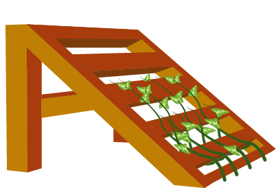

בניית הדליות
הדליה זהו מתקן שמאפשר לגידולים מטפסים לצמוח עליו. הקרקע הלחה לעתים גורמת לחלק מהצמחים לפתח מחלות, והמתקן עוזר לצמח לרחף מעליה ולהימנע מבעיה זו. בנוסף לכך, הוא עוזר במידה מסוימת להגן על הצמח מחשופיות וחלזונות. ישנם מספר צמחים שמתאימים להדליות, כמו: מלפפונים, עגבניות, שעועית, ואפונה.
סוגי הדליות
הדליה על גבי חוט
ליפוף הצמח על גבי חוט או חבל מאפשר לראות את הירקות בצורה יותר טובה. שיטה זו נוחה לקטיף, והירקות פחות חשופים למחלות. זוהי גם שיטה קלה מאוד לבנייה.
להוראות בנייההדליה על גבי רשת
תפיסת הצמח על גבי רשת בצורה הדוקה. יש לה עמידות גבוהה והיא אינה נקרעת בקלות, וכמו כן מגנה על הצמחים מחרקים ומאפשרת חשיפה טובה לאור ולאוויר. שיטה זו מאפשרת שליטה טובה בכיוון הגדילה של הצמח.
להוראות בנייה
הדליה על גבי משטחי עץ
ניתן לבנות הדליה מעמודים אלכסוניים בזווית של 45 מעלות מהקרקע, וממשטחי עץ (רפסודות), ולגדל עליה צמחים רחוק מהקרקע. שיטה זו דורשת שימוש בכלי עבודה כמו מסור ומקדחה, אבל מייצרת הדליות עמידות מאוד, במיוחד לירקות ופירות כבדים.
להוראות בנייההדליה על גבי חוט
חומרים:
עמודים (ברזל / עץ / במבוק), חוט.
זמן עבודה: חצי שעה
- העמידו בקרקע שני עמודים. הם יכולים להיות מברזל (בזנטים), עץ, או במבוק.
- קשרו חוט בין שני העמודים בצורה אופקית. עשו זאת בשתי רמות גובה לפחות, כאשר החשובות ביותר הן גובה הברך וגובה המותן.
- קשרו מהחבל העליון חוטים היורדים כלפי מטה בצורה אנכית לפי מיקום הצמחים בערוגה.
- קשרו את החוטים לצמחים, ולפפו מעט את הצמח סביב החוט כדי שייתפס עליו ולא ינוח על הקרקע. שימו לב לחבר ולקשור בעדינות כדי שיהיה לצמח מקום לגדול.
- המשיכו ללפף את הצמחים על החוט במשך גדילתם. מרביתם יתפסו לבד, אך לפעמים תידרש עזרה חיצונית.
הדליה על גבי רשת
חומרים:
עמודים (ברזל / עץ / במבוק), חוט.
זמן עבודה: חצי שעה
-
העמידו בקרקע שני עמודים, יכולים להיות מברזל (בזנטים), או מעץ או מבמבוק.
אפשרות נוספת: הבריגו לקיר פרופיל עץ שאליו תתחבר הרשת. - חברו את הרשת לשני העמודים כך שהיא תעמוד בצורה מאונכת לקרקע. ניתן לקשור בחבל, לחבר באזיקונים או בחוט ברזל. במידה ואתם מחברים לקיר ניתן להבריג את הרשת לפרופיל כדי לקבעה.
- קישרו בעדינות את הצמחים לרשת (בחוט או חוט ברזל) כדי שיורחקו מהאדמה. שימו לב להשאיר להם מקום לגדול בקשירה.
- המשיכו לחבר את הצמחים לרשת כאשר הם גדלים, מרביתם יתפסו לבד אבל לפעמים נדרשת עזרה חיצונית.
הדליה על גבי משטחי עץ
חומרים:
עמודים (ברזל / עץ / במבוק), חוט.
זמן עבודה: חצי שעה
- פרקו משטח אחד לקרשים.
- בחרו שני קרשים. נסרו אותם באורך שווה וחיתכו זווית של 45 מעלות בשני הקצוות של כל קרש, בצורה המזכירה טרפז.
- הבריגו את הקרשים לצידי המשטח, קרש בכל צד, כך שהמשטח יעמוד כשחלקו העליון מוגבה מהקרקע ונוצר שיפוע.
- באמצעות קרש נוסף צרו חיזוק בין הרגליים. הבריגו אותו בין שתי הרגליים בצורה אופקית ומקבילה לקרקע, כדי למנוע פישוק שלהן ולייצר תמיכה נוספת במבנה.
- הניחו את המבנה סמוך לערוגה, ניתן בהתחלה לקשור בעדינות את השתילים למשטח. חשוב להשאיר להם מקום לגדול בקשר ולא להדקו יותר מדי.
- לרוב השתילים יטפסו לבד על המשטח בגדילתם. במידה ולא, ניתן לעזור להם להתחבר עם קשירה.
- במידה ומגדלים דלועים גדולים (דלעות, אבטיחים, מלונים) חשוב להקפיד שהפרי אינו נלחץ בין השלבים בזמן ההתפתחות. מומלץ לייצר ערסלים מבד או רשת ולחברם למשטח כדי לתמוך במשקל הפרי ולמנוע התנתקות לפני סיום הגדילה.